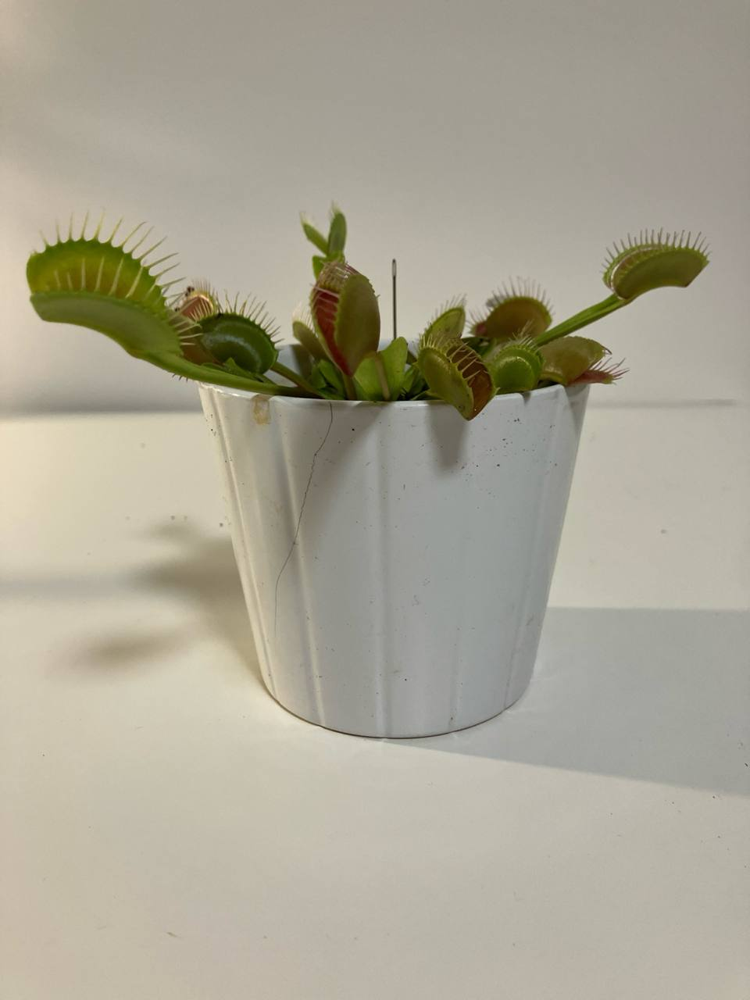

Activity
- Scheduled
- Feed 08-09-2024
- Destil water
Venus Flytrap Plant Care Guide
Environment
Light
- Direct Sunlight: Venus Flytraps thrive in full sun. They need at least 4-6 hours of direct sunlight each day. If grown indoors, place them near a sunny window or use a grow light.
Soil
- Acidic, Nutrient-Poor Soil: Use a mix of sphagnum peat moss and perlite or sand (not beach sand) in a 1:1 ratio. Avoid regular potting soil as it can be too rich for the plant.
Temperature
- Warm Temperatures: Venus Flytraps prefer temperatures between 70-95°F (21-35°C) during the growing season. They can tolerate cooler temperatures down to 40°F (4°C) during dormancy.
Routine jobs
Watering
- Pure Water: Use only distilled water, rainwater, or reverse osmosis water. Tap water contains minerals that can harm the plant.
- Moist Soil: Keep the soil consistently moist but not waterlogged. A water tray method works well, where the pot sits in a shallow tray of water to maintain moisture.
Feeding
- Insects: Feed your Venus Flytrap live insects such as flies, spiders, or small crickets. Each trap can handle one or two insects a month. Do not feed them human food.
- Do Not Overfeed: Overfeeding can stress the plant. Let it catch its own prey whenever possible.
Dormancy
- Winter Dormancy: Venus Flytraps require a dormancy period in the winter. Reduce watering, keep the soil just barely moist, and provide cooler temperatures (around 40-50°F or 4-10°C).
Troubleshooting
- Common Pests: Watch for aphids, spider mites, and fungus gnats. Treat infestations with insecticidal soap or neem oil.
- Leaf Care: Remove any blackened or dead leaves to keep the plant healthy.